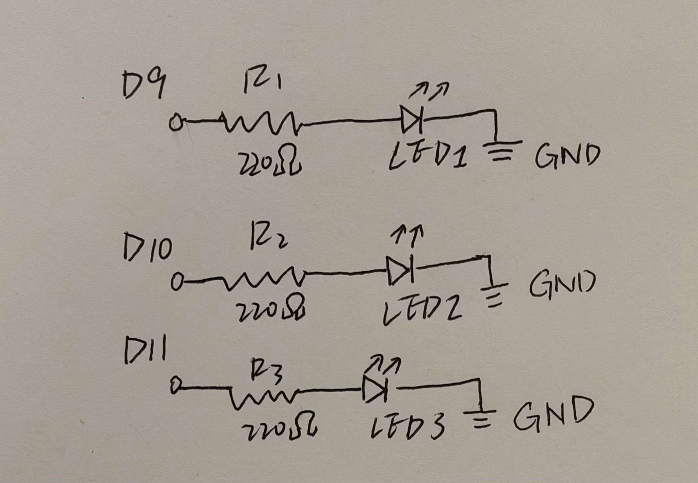
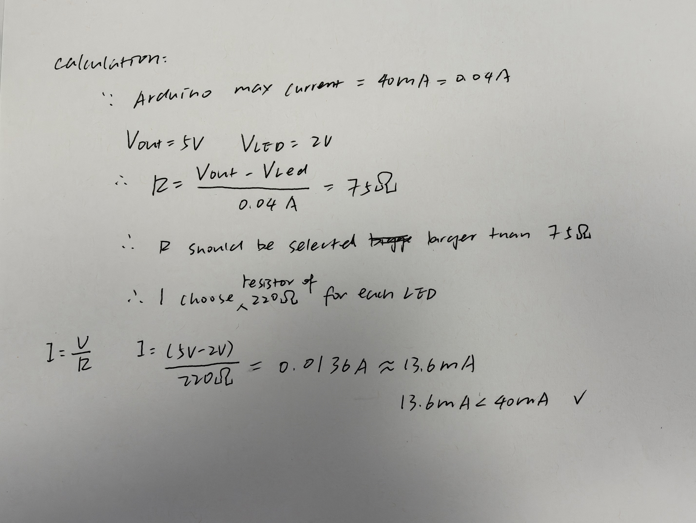
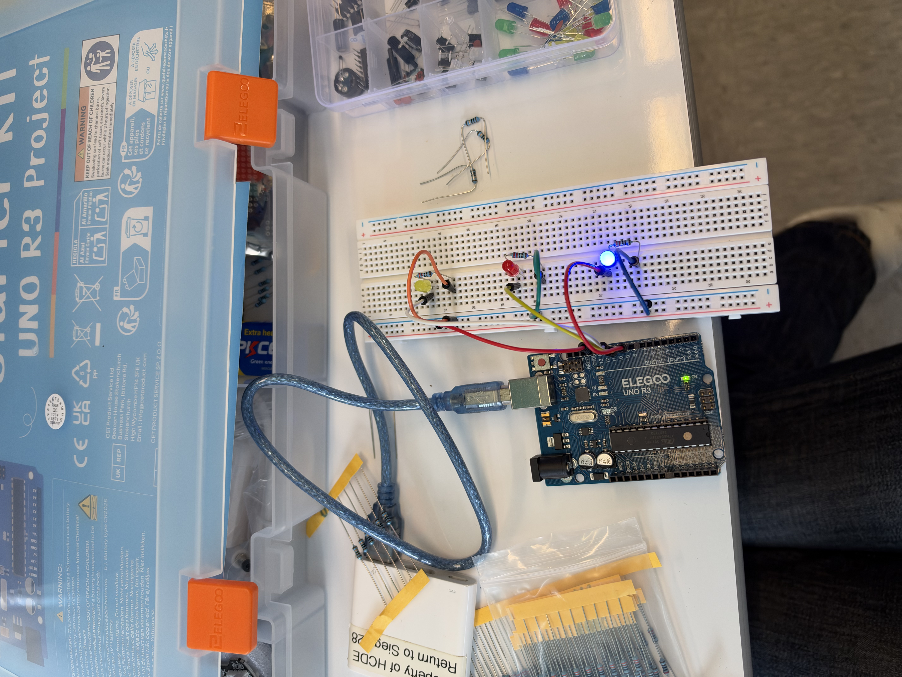
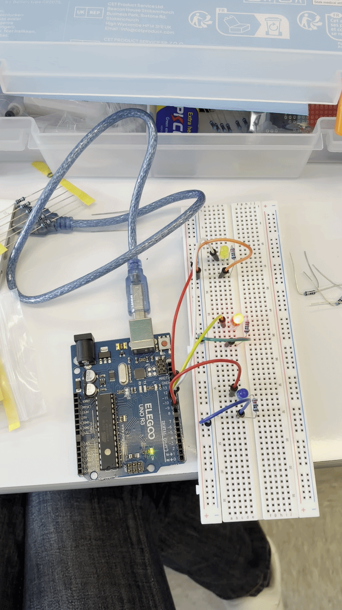
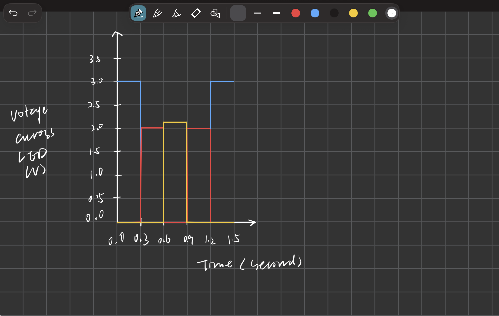

For thsi assignment, I created a running-light pattern using 3 LEDs connected to an Arduino Uno. The LEDs blink in sequence LED1 -> LED 2 -> LED 3 -> LED2, with a 300ms delay between transitions.
For thsi assignment, I created a running-light pattern using 3 LEDs connected to an Arduino Uno. The LEDs blink in sequence LED1 -> LED 2 -> LED 3 -> LED2, with a 300ms delay between transitions.

Figure 1. Circuit schematic showing three LEDs connected to digital pins D9, D10, and D11, each with a 220Ω resistor.

Figure 2.Calculation of the minimum resistance based on the Arduino's 40mA per-pin limit, and verification that a 220Ω resistor limits the estimated LED current to 13.6mA.

Figure 3. My Arduino Uno circuit with three LEDs, each connected to a separate digital pin through a 220Ω resistor.
The LEDs blink in a repeating sequence: LED 1 → LED 2 → LED 3 → LED 2.
/*
HCDE 439 - A1 Blink!
Holiday Running Lights
*/
// Assign digital pin 9 to LED 1.
int led1 = 9;
// Assign digital pin 10 to LED 2.
int led2 = 10;
// Assign digital pin 11 to LED 3.
int led3 = 11;
// Set each light's duration to 300 milliseconds.
int blinkSpeed = 300;
// Run this function once when Arduino starts.
void setup() {
// Configure LED 1 as an output.
pinMode(led1, OUTPUT);
// Configure LED 2 as an output.
pinMode(led2, OUTPUT);
// Configure LED 3 as an output.
pinMode(led3, OUTPUT);
}
// Repeat the blinking pattern continuously.
void loop() {
// Turn LED 1 on.
digitalWrite(led1, HIGH);
// Wait for 300 milliseconds.
delay(blinkSpeed);
// Turn LED 1 off.
digitalWrite(led1, LOW);
// Turn LED 2 on.
digitalWrite(led2, HIGH);
// Wait for 300 milliseconds.
delay(blinkSpeed);
// Turn LED 2 off.
digitalWrite(led2, LOW);
// Turn LED 3 on.
digitalWrite(led3, HIGH);
// Wait for 300 milliseconds.
delay(blinkSpeed);
// Turn LED 3 off.
digitalWrite(led3, LOW);
// Turn LED 2 on again.
digitalWrite(led2, HIGH);
// Wait for 300 milliseconds.
delay(blinkSpeed);
// Turn LED 2 off.
digitalWrite(led2, LOW);
}

Figure 4. Animated GIF showing the running-light pattern with a 300ms delay.

Figure 5. Estimated voltage across the three LEDs over time. I assumed approximately 3.0V for the blue LED, 2.0V for the red LED, and 2.1V for the yellow LED when ON, and 0V when OFF.
The Arduino Uno has 14 digital pins, so it can theoretically control 14 LEDs independently. Each LED draws about 13.6mA, so 14 LEDs would draw approximately 190.4mA if all were on simultaneously. And it is still below 200mA.
My original delay was 300ms, making the blinking clearly visible. After reducing the delay to 5 ms, I could no longer distinguish individual flashes.
Yes, I used ChatGPT during this assignment. At first, I was unsure whether to connect all three LEDs to pin 13 or use separate pins. ChatGPT suggested using three digital pins to control the LEDs independently.
I also used AI to understand how to format and display my code in HTML, create and edit my A1 page on GitHub, and upload images. Since I was unfamiliar with documenting assignments through GitHub, these suggestions helped me complete the process.